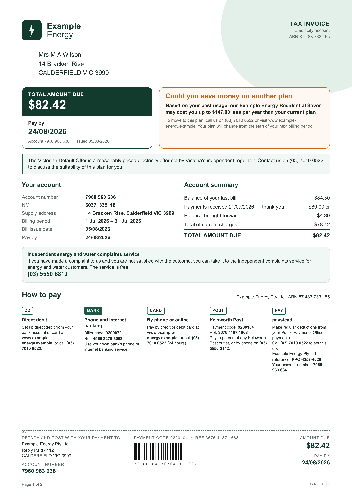

Six fields, three states, and the one she never sees
One letter is read once and comes back as six fields, each carrying a status. What the database keeps
and what any screen is allowed to show are not the same list, and the difference is made in one place,
on the server, on the way out.

One letter, photographedread once, and nobody is asked for a second opinion
→
the model answers with all six, every time
What storage keeps
extracted_fields, one row per field, six every time
document_typeElectricity billconfirmed
issuerExample Energyconfirmed
action_requiredPay the total amount dueconfirmed
due_date24 Aug 2026uncertain
amount$82.42confirmed
reference(nothing)unreadable
the server collapses uncertain to unreadable on the way out
What any screen can show
the API response, the review screen, the calendar, the search index
document_typeElectricity billconfirmed
issuerExample Energyconfirmed
action_requiredPay the total amount dueconfirmed
the row is not drawn at all; an empty row invites an answer nobody is asking for
amount$82.42confirmed
the same here, and for the same reason: on this side of the wall there are only two states
The hedged value is not thrown away
It stays in extracted_fields, where the accuracy work can count how often the model hedges and
what it guessed when it did. That measurement is the only reader it has.
Pay the total amount due
Example Energy
No date
So the letter becomes a task with no date
The date never reached a screen, so nothing is scheduled: no reminder, no dot on the calendar.
It stays on the list until she ticks it, and the list is the reminder.
Trusting the model includes trusting its “I am not sure”. When it hedges, the
product takes the hedge at face value instead of asking her to overrule it. Storage keeps the hedged
value, because how often the model hedges and what it guesses is evaluation data. Nothing else keeps
it: no API response, no screen, no calendar, no search index.
As far as the product behaves, a value the model was unsure of does not exist. The calendar
therefore has exactly two sources, a confident reading that a person has seen, or nothing, and no
procedure has to guard against a third.